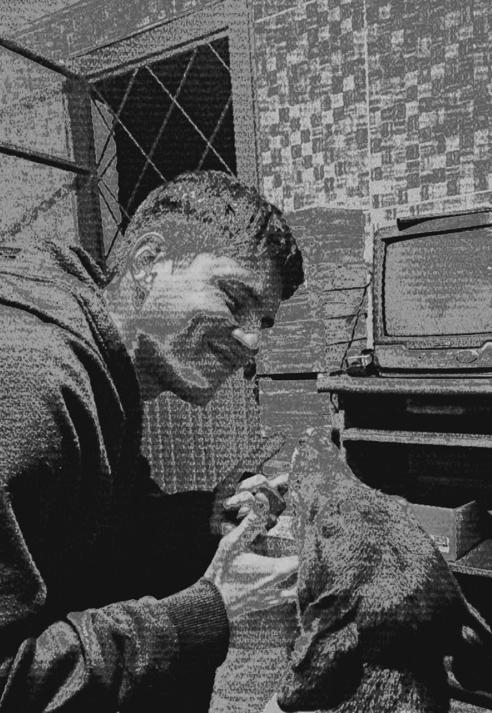

@Beforg


Olá, meu nome é Bruno, sou um desenvolvedor Java e estudante de Análise e Desenvolvimento de Sistemas. Aqui você encontrará alguns dos meus projetos e trabalhos. Fique a vontade para explorar e conhecer um pouco mais sobre mim.
Apaixonado por aprender novos conhecimentos e exercitar a criatividade desenvolvendo projetos. Natural de Santana do Livramento-RS, tenho 22 anos e curso o segundo semestre de Análise e Desenvolvimento de Sistemas no IFSul - Câmpus Sant'Ana do Livramento. Minha linguagem principal é Java, na qual tenho grande paixão em aprender cada dia mais. Também possuo conhecimentos básicos em Python, HTML, CSS, MySQL e PostgreSQL.